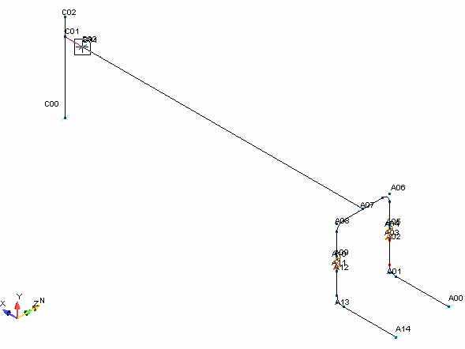
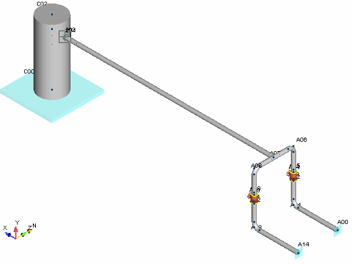
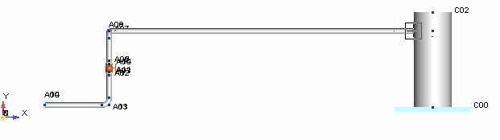
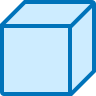

Solid Model View
.png) The Solid Model view allows you
to view the model as a three-dimensional graphic. In AutoPIPE, you
can toggle between single line, double-line, and 3D modes.
The Solid Model view allows you
to view the model as a three-dimensional graphic. In AutoPIPE, you
can toggle between single line, double-line, and 3D modes.
- Select View > Zoom-Pan > Zoom Extents. This command fits the extents of the model within the current viewing window as shown below.

- Select View > Mode > Solid Model View. The model is re-displayed as a three-dimensional representation of the components in the system as shown in the following figure.

 3. Restore the previous view of the model by selecting Home > View > Default. Your model appears as shown in the following figures.